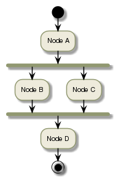
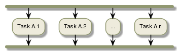
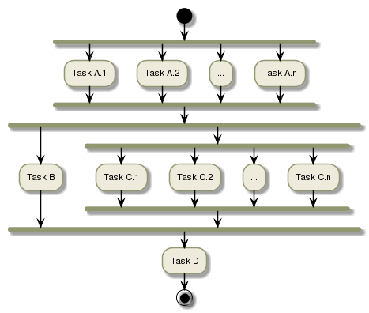

As introduced in the workflow section, the processing nodes are the edges of a Directed Acyclic Graph and they can be run in parallel.
This section explains what can be done within a processing node.
The processing node can be executed as several processing tasks or a single processing task.
While the single processing task doesn’t change the understanding of the workflow where a node will process a single task, an example of a node breaking down into several processing tasks is show below.
In the previous workflow example:

Let’s say Node A and Node C break-down into several processing task.
Node A is executed as:

The complete workflow is executed as:

Tip